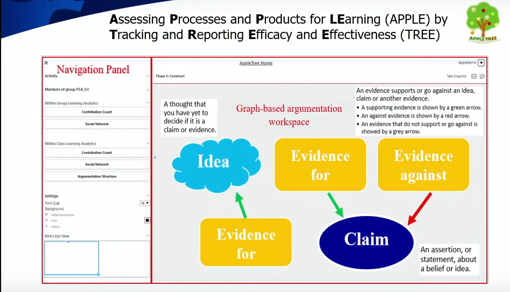

T4E 2023: Framing Education as an Incremental, Contextual and Cultural Endeavor
The Technology for Education conference was organized by the EdTech Society, and was held at IIT Bombay from November 23rd to November 26th 2023. I was really looking forward to attend the conference, as I wanted to meet and catch up with a lot of people. The “talking” and “catching up” resulted in missing out on many paper sessions! However, there were still a lot of ideas and insights to glean from the talks and discussion.
Here are some of them.
Wenli Chen - Computer-Supported Collaborative Argumentation: Technological and Pedagogical Design
There are no separate ICT teachers. All teachers are ICT teachers.
The Singapore government requires that every student should have a personal learning device (PLD). Hence, if teachers say - “Don’t switch on your laptops” in the classroom, it is politically incorrect, as they would be going against the government mandate.
This is an interesting case of how top-level policies can influence grass root implementations and behaviours.
EdTech is never a solved problem. It constantly evolves
Analytics of learning vs. Analytics for learning - insights from data can be used by students to inform their own learning

The entire keynote video can be found here.
Amina Charania - Teacher Professional Development in the Indian government school system
There are two prominent models of teacher development - the Cascade Model and the Nested Approach. The cascade model involves training the teacher, who then trains the next set of teachers and so on. The nested approach involves the initial trainers maintaining contact upto the last level.
Idea: Early mentors - Teachers who completed the course content well before time were asked to be mentors to the others who were part of the same course. Such early mentors may have completed the course not just because of their ability, but also due to other factors such as more experience, exposure, and more access to infrastructure.
In teacher professional development, provide content that is relevant to teachers’ immediate contexts.
Constantly acknowledge teachers in peer groups, as well as state and national levels.
Provide flexible accreditation to teachers in the form of certificates, badges etc.
The entire keynote video can be found here.
Panel - Mainstreaming EdTech Innovations in India
Dr. T. G. Lakshmi moderated an excellent panel on - Navigating the EdTech Landscape: A Panel Discussion on Mainstreaming EdTech Innovations in India. The panelists were:
- Nirmal Patel - CEO of Smart Paper and Chief Data Scientist at Playpower Labs
- Mandar Kulkarni - Co Founder of Gatuvit and The Labs
- Ritesh Agarwal - VP at Educational Initiatives
- Veenita Shah - Head Research & Strategy at Tata ClassEdge
Here are some salient quotes from the panel presentations and discussions.
We don’t need more solutions; we need solutions used in the right way
How do you make EdTech that works rather than technology that shines?
Effective implementation (of EdTech interventions on the ground) cannot be envisioned without effective training
EdTech in India places a lot of emphasis on data collection and assessments, but not much focus on contextualisation and teacher training.
Context is important, especially in India. Context involves not only contextualising content (e.g. pizza vs. roti vs. dosa), but also delivery (how to deliver solutions to urban vs rural populations)
EdTech solutions should cater to 4 types of teachers - those with (1) high motivation and high competence, (2) high motivation but low competence, (3) low motivation but high competence and (4) low motivation and low competence
I came back from the conference with a renewed hope that EdTech in India is moving in the right direction - it’s not just about profits and providing solutions to the masses, but in understanding the complexities and nuances that are needed in providing an enriching learning experience to the next generation of learners in India. These are exciting times for EdTech in India, and I’m glad that I am getting to experience this first-hand and contribute in small ways towards this grand vision of improving Indian education. Can’t wait to see what T4E 2024 has in store!